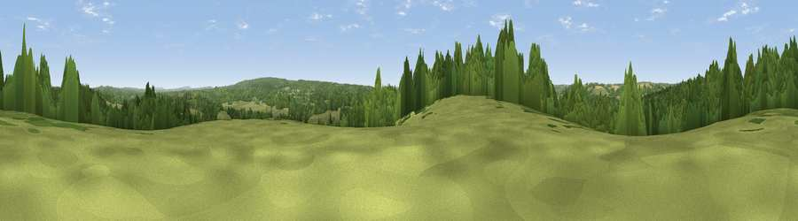

Viewpoint near Dockenfield
#39358 in England · top 63% of its area beats it · near DockenfieldThe view, rendered

A 360° render of this exact spot computed from the terrain model, tree cover and land cover — summer colours, afternoon light, calibrated against photographs of famous viewpoints. Real trees, hedges and buildings will differ in detail.
The panorama
Grey silhouette: terrain skyline in each direction (720 bearings, Earth curvature and refraction included). Dashed green: skyline with trees (+15 m) and buildings (+8 m) as obstacles. Blue strip: how far the ground is visible on each bearing.
Where the view opens
Wedge length = distance to the farthest visible ground on that bearing (vegetation-aware). Rings at 10, 25 and 50 km.
What fills the view
56% woodland · 38% grassland · 4% cropland · 2% built-up
Angular shares of the visible panorama (visual magnitude), not map area. Landscape diversity 0.40 (0–1 Shannon).
Key numbers
More beautiful places nearby
The staircase of upgrades: each row has a higher view potential than everything closer. Driving times are estimates from straight-line distance, calibrated against real road routing — check an actual route before setting out.
| Place | Direction | Drive | Score |
|---|---|---|---|
| Abbotts Wood Hill | S · 1 km | ~2 min | 37.5 |
| Viewpoint near Kingsley | WSW · 3 km | ~8 min | 44.1 |
| River Hill | WNW · 4 km | ~9 min | 46.4 |
| Viewpoint near Kingsley | W · 4 km | ~10 min | 48.1 |
| Viewpoint near Crondall | NNW · 7 km | ~14 min | 51.7 |
| Wick Hill | SW · 8 km | ~16 min | 52.4 |
| Viewpoint near Runfold | NE · 8 km | ~16 min | 56.3 |
| Viewpoint near Hindhead | ESE · 8 km | ~17 min | 60.4 |
51.15540, -0.82968 · source: osm peak · position refined by local search. Computed location — check access rights before visiting.